Columns show normalized τ = 0, 0.5, 1; actual time is scaled by T_end. Rows include every algorithm scheduled by the immutable run plan.
| Algorithm / run status | Start (τ=0) | Midpoint (τ=0.5) | End (τ=1) |
|---|---|---|---|
| branch-and-bound run: run_20261012T042126Z__branch-and-bound__minmax__sbgdb-20200507-fpg-poly_0000000030-749__r00__f4a8a5958e70 COMPLETED; feasible=True; verified=True (CERTIFIED_CONTINUOUS); optimality=OPTIMAL | 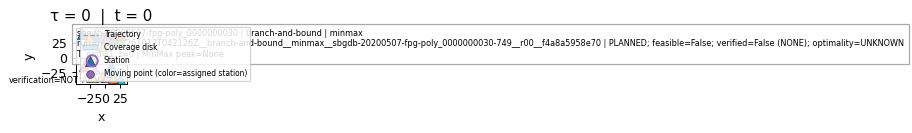 | 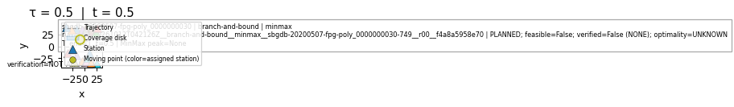 | 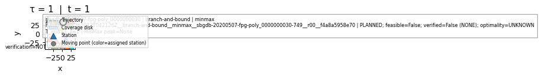 |
| brute-force run: run_20261012T042126Z__brute-force__minmax__sbgdb-20200507-fpg-poly_0000000030-749__r00__a6e92b701121 COMPLETED; feasible=True; verified=True (CERTIFIED_CONTINUOUS); optimality=OPTIMAL | 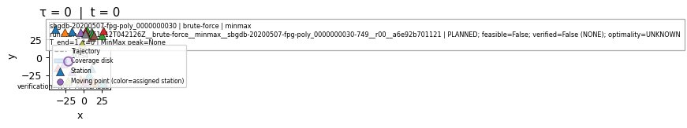 | 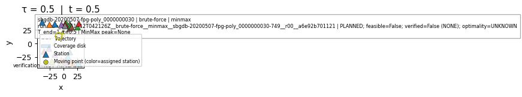 | 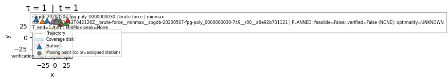 |
| genetic run: run_20261012T042126Z__genetic__minmax__sbgdb-20200507-fpg-poly_0000000030-749__r00__f470589e8f33 COMPLETED; feasible=True; verified=True (CERTIFIED_CONTINUOUS); optimality=FEASIBLE | 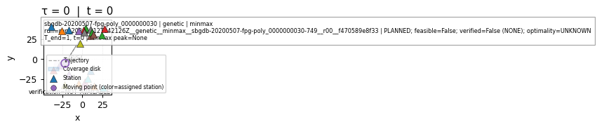 | 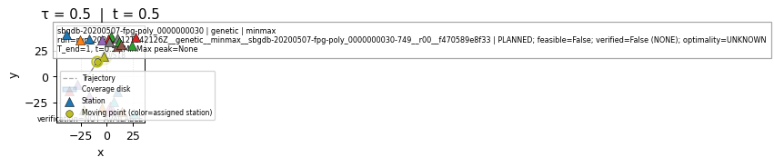 | 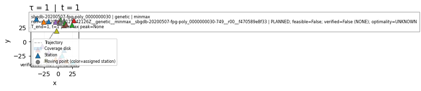 |
| greedy run: run_20261012T042127Z__greedy__minmax__sbgdb-20200507-fpg-poly_0000000030-749__r00__48671dabb677 COMPLETED; feasible=True; verified=True (CERTIFIED_CONTINUOUS); optimality=FEASIBLE | 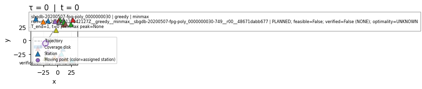 | 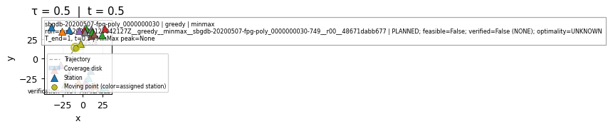 | 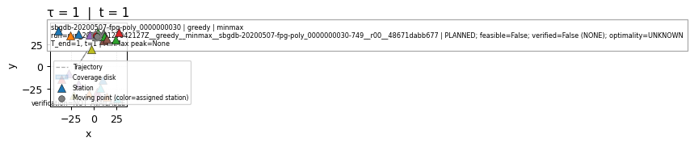 |
| ip-kont run: run_20261012T042926Z__ip-kont__minmax__sbgdb-20200507-fpg-poly_0000000030-749__r00__265aedbf5052 SKIPPED; feasible=False; verified=False (NONE); optimality=UNKNOWN | SKIPPED; feasible=False; verified=False (NONE); optimality=UNKNOWN NO_SOLUTION_ARTIFACT | SKIPPED; feasible=False; verified=False (NONE); optimality=UNKNOWN NO_SOLUTION_ARTIFACT | SKIPPED; feasible=False; verified=False (NONE); optimality=UNKNOWN NO_SOLUTION_ARTIFACT |
| local-search run: run_20261012T042127Z__local-search__minmax__sbgdb-20200507-fpg-poly_0000000030-749__r00__5cbecc0cc6eb COMPLETED; feasible=True; verified=True (CERTIFIED_CONTINUOUS); optimality=FEASIBLE | 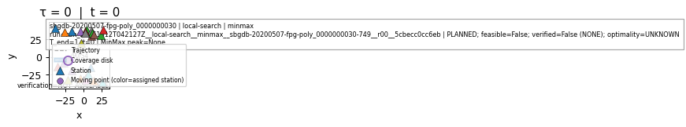 | 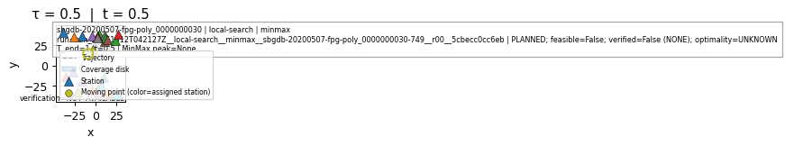 | 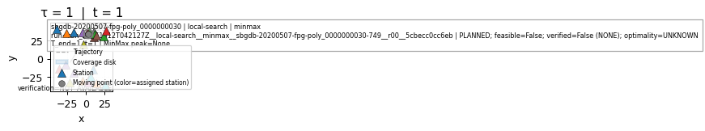 |
| lp-rounding run: run_20261012T042127Z__lp-rounding__minmax__sbgdb-20200507-fpg-poly_0000000030-749__r00__f89365304ce3 COMPLETED; feasible=True; verified=True (CERTIFIED_CONTINUOUS); optimality=FEASIBLE | 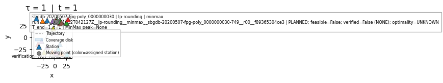 | ||
| nn run: run_20261012T042127Z__nn__minmax__sbgdb-20200507-fpg-poly_0000000030-749__r00__82bc20c46678 COMPLETED; feasible=True; verified=True (CERTIFIED_CONTINUOUS); optimality=FEASIBLE | 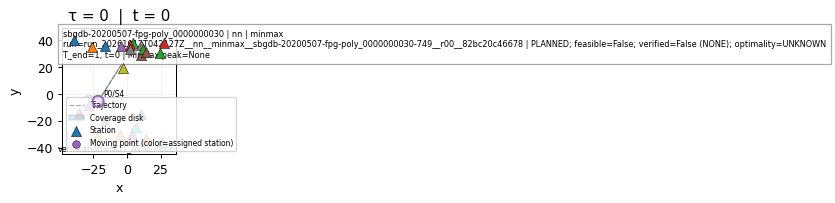 | 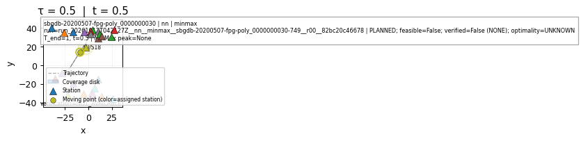 | 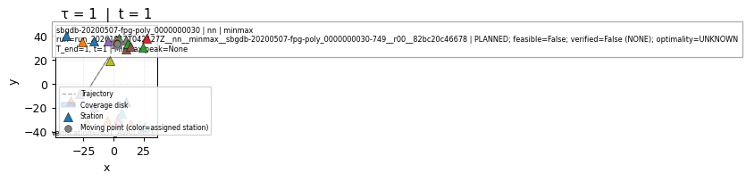 |
| primal-dual run: run_20261012T042127Z__primal-dual__minmax__sbgdb-20200507-fpg-poly_0000000030-749__r00__9cf884e94539 COMPLETED; feasible=True; verified=True (CERTIFIED_CONTINUOUS); optimality=FEASIBLE | 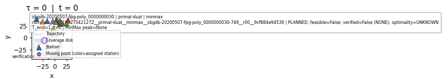 | ||
| sa run: run_20261012T042127Z__sa__minmax__sbgdb-20200507-fpg-poly_0000000030-749__r00__95b24a0da5ef COMPLETED; feasible=True; verified=True (CERTIFIED_CONTINUOUS); optimality=FEASIBLE | 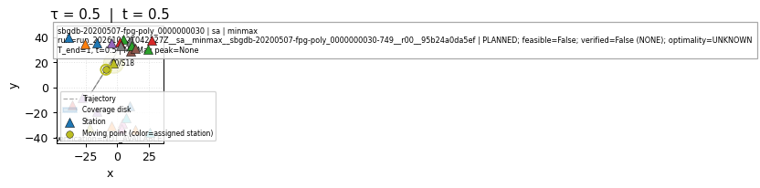 | 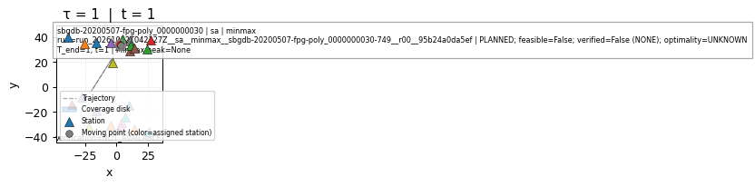 | |
| shifting run: run_20261012T042127Z__shifting__minmax__sbgdb-20200507-fpg-poly_0000000030-749__r00__6a9e42f7b845 COMPLETED; feasible=True; verified=True (CERTIFIED_CONTINUOUS); optimality=FEASIBLE | 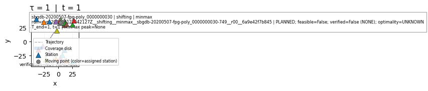 |